Welcome to the Spider Verse
Here you'll get to know everything about Spider Man in MCU and Sony.
Your Only Guide to watch Spider-Man Brand New Day
Year 1962 - The Birth Of Spider Man
In August 1962
A comic released named as Amazing Fantasy #15 written by Stan Lee & Steve Ditko
Context
- Introduction of Peter Parker
- He was a nerdy Teenager of Queens, New York
- Lived with Aunt May & Uncle Ben
- Was a Science Genius
- Bullied in his High School
The Twist
The Radio-Active Spider
He was bitten by a Radio-Active Spider in a science exhibition which changed everything.
And he got powers
Powers:
- Super Strength
- Wall Crawling
- Enhanced Agility
- Spider Sense
Wrestling Phase
After he got these super powers he didn't became a Super Hero he did Wrestling on TV to earn money with his Super Strength
The Incident
A Criminal was running and Peter was able to stop it but he didn't and said "Not My Problem" and let the criminal run away.
The Death
The Criminal who was ignored by Peter killed his "Uncle Ben"
Then he understands:
"With Great Power Comes Great Responsibility."
And that was the moment when "SPIDER-MAN" was born.
Year 1963 - Beggining of The Amazing Spider-Man
In March 1963
Another Comic released as The Amazing Spider Man 1
After the introduction of Spider-Man it became so popular that a different series of comic started for Spider-Man
New Characters :
-
J. Jonah Jameson
Editor of Daily Bugle.
Believed Spider-Man was a threat.
- Daily Bugle - Newspaper Company
- Fantastic Four Meeting
Spider-Man met fantastic four and tried to join it.
Villains Introduction:
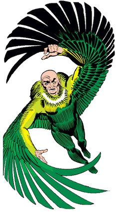
The Vulture
Introduced In The Amazing Spider Man #2
In 1963
First Super Powered Villain.

Doctor Octopus
Introduced In The Amazing Spider Man #3
In 1963
Otto Octavius
Four mechanical arms
One of the Greatest villain of Spider-Man.
.png)
Sandman
Introduced In The Amazing Spider Man #4
In 1963
Can convert his body into sand
.jpg)
The Lizard
Introduced In The Amazing Spider Man #6
In 1963
Dr. Curt Connors
Also he was Peter's Mentor.
.png)
Electro
Introduced In The Amazing Spider Man #9
In 1963
Year 1964 - Spider-Man Becomes Marvel's Biggest Hero
Till 1964 Spider-Man Became the Most Popular Hero of Marvel.
Major Villains Added:
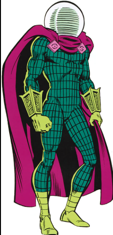
Mysterio
Introduced In The Amazing Spider Man #13
In 1964
Can ceate Illustions
Special Effects Expert.

Green Goblin
Introduced In The Amazing Spider Man #14
In 1964
Future Arch Enemy
Identity not revealed yet.

Kraven The Hunter
Introduced In The Amazing Spider Man #15
In 1964
Hunter Who wanted to make Spider-Man a Trophy.
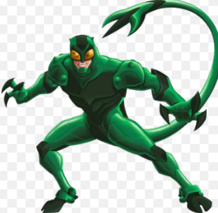
Scorpion
Introduced In The Amazing Spider Man #20
In 1964
Wad a Result of J. Jonah Jameson's Experiment.
Sinister Six Formation:

Sinister Six:
Introduced In The Amazing Spider Man Annual #1
In 1964
First Villian Team.
Members:
Doctor Octopus
Vulture
Electro
Mysterio
Sandman
Kraven
Year 1965 - Peter Parker's World Expands
High School Life
Peter:
- Student
- Photographer
- Spider-Man
Peter was balancing 3 Identities at the same time.
New Characters:
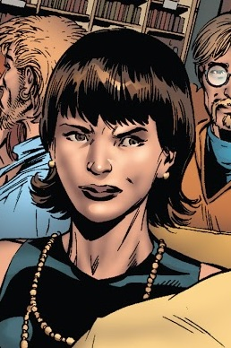
Betty Brant
In 1965
Peter's early love interest
Worked in Daily Bugle.

Human Torch
In 1965
Spider Man and Human Torch's Friendship
Spider Man and Human Torch's Rivalry.
Green Goblin
Green Goblin Returns
In 1965
Started Attacking Repeatedly
Started being Popular.
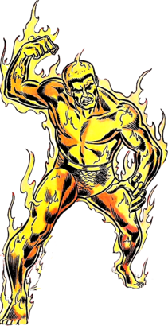
Molten Man
In 1965
Former lab assistant to Spencer Smythe
Metallic Alloy spilled over His body and was absorbed into his skin..
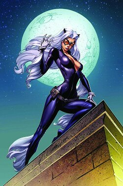
Black Cat
In 1965

Crime Master
In 1965
Year 1966 – Spider-Man Becomes a Cultural Icon
TV Debut
Spider-Man Animated Series Started.
Theme Song:
"Spider-Man, Spider-Man, does whatever a spider can..."
This show made Spider-Man more famous in whole world instead of only comic readers.
College Transition Setup:
All things were in the direction to promote Spider-Man from high school to college.
Green Goblin
Green Goblin's mystery was going more deep cause marvel didn't revealed who is Green Goblin
Fan's were guessing who is Green Goblin.
Year 1967
Green Goblin's Mystery Continues
Goblin became most dangerous enemy of Spider-Man
Identity not revealed yet.
Peter's Personal Life Grows
Worked in Daily Bugle
Transition towards college life.
TV Series
Animated series gets more popular
Spider-Man Became Global Icon
Year 1968 - College Life Begins
Amazing Spider-Man #31-33
Peter joins Empire State University
Important Characters Introduced:
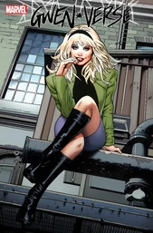
Gwen Stacy
In 1965
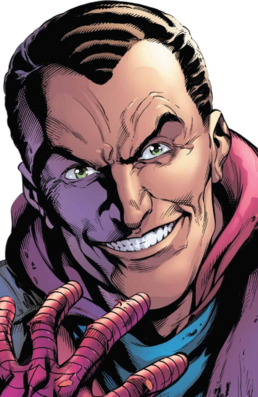
Harry Osborn
In 1965
The Master Planner Saga
Doctor Octopus Returns
- Aunt May was seriously Ill
- To Cure Aunt May Peter has to fight Doc Ock.
Famous Scene:
Spider-Man Gets stuck below thousands of tons of machinery
But to save aunt may he sets himself freee!!!!!!!!!
This becames most iconic moment of Spider-Man history.
Year 1969
Relationship
Peter & Gwen comes in Relationship
Gwen introduced Peter with his Father
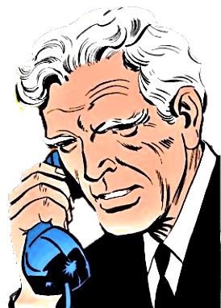
George Stacy
Also known as Captain Stacy
In 1969
Police Captain
Gwen's Father
Belived that Spider-Man is a villain not hero
Didn't knew that Peter Parker is Spider Man till now.
Year 1970
Incident Happens
George Stacy dies in a battle
While dying he understood that peter is Spider-Man
His death deeply affected Gwen & Peter's Relationship
Year 1971 - Comics Code Revolution:
Spider-Man comics published a story on drug abuse
Publishing drug related material in comics were banned
Marvel Challenged Comics Code Authority
Important moment of Comic History.
Harry Osborn Problem:
He had Stress
Emotional Problems
Was addicted to Drugs
His life got a downfall.
Year 1972 - Mystery Revealed
Amazing Spider Man #39-40
Green Goblin's Identity Was Revealed
Norman Osborn
Father of Harry Osborn - Peter's Best Friend
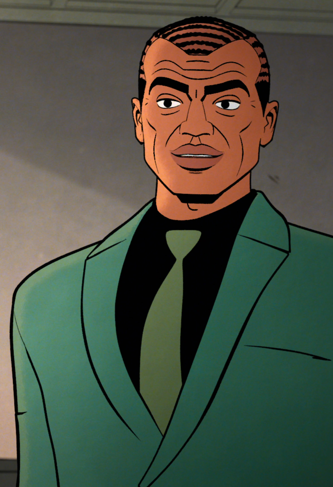
Normon Osborn
Amazing Spider-Man #39-40
In 1972
Father of Harry Osborn
Green Goblin = Norman Osborn
Mentored Peter Parker
Wanted to kill Spider-Man as Green Goblin
Forgets everything after the fight when he converts back into Norman.
Year 1973 - Most Important Year
Gwen Stacy Dies
Amazing Spider Man #121
Green Goblin pushes Gwen from bridge during a fight with Peter
Peter Tries to save gwen with webs but
Gwen Dies
Why This Matters?
This event changed comics permanently
Before this tragedy heros close one's rarely die
Gwen's death broke Spider-Man Emotionally.
Green Goblin's End
Amazing Spider Man #122
Peter wanted to take revenge og Gwen's Death
Peter & Norman had a fight
Goblin commanded his glider to attack on Peter But
Peter doges it and Goblin's glider kills Green Goblin!
Year 1974-1976
Life after Gwen's Death
Peter was broken emotionally.
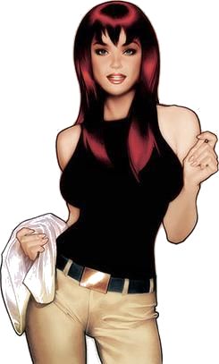
Mary Jane Watson
Also known as MJ
In 1974
Peter's Classmate
Peter's Friend
MJ
MJ was a fun-loving party girl
But, After Gwen's death she became emotional support for Peter
In this period MJ & Peter's friendship grows stronger
Harry Osborn
Struggling with depression and emotional problems
His father's death affected him though.
Year 1977-1979
Black Cat Arrives
Amazing Spider Man #194
Felicia Hardy (Black Cat)
Master Thief
Acrobat
Anti-Hero
Peter and Felicia starts developing attraction
There Relationship becames one of the famous relationships of SPIDER-MAN.
Peter's Career
College Continues
Daily Bugle Photography
Financial Struggles
Peter's "Normal life vs Super-Hero life" is Conflict & Strong.
Year 1980-1983
Hobgoblin Appears
Normal goblin was dead
But Marvel needed a goblin villian
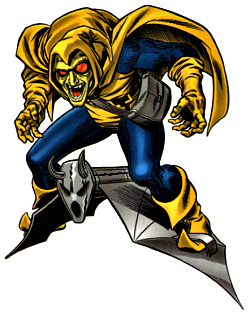
Hobgoblin
In 1980
Green Goblin inspired Villian
Identity Mystery
Fans guessed who is hobgoblin for years.
Peter & MJ
They are now in relationship
MJ is not anymore a side character
Year 1984
Secret Wars
One of the biggest events in Spider-Man history
Heroes and villians fought on a different alien planet.
Black Suit
Spider-Man's Suit was damaged in the battle
He used a machine and by mistake an alien symbiote made bond with his suit
Which led to the result: Black Spider Man Suit

Features:
Shape Changing
Infinite Webbing
Self Repairing
Initially Peter Liked It